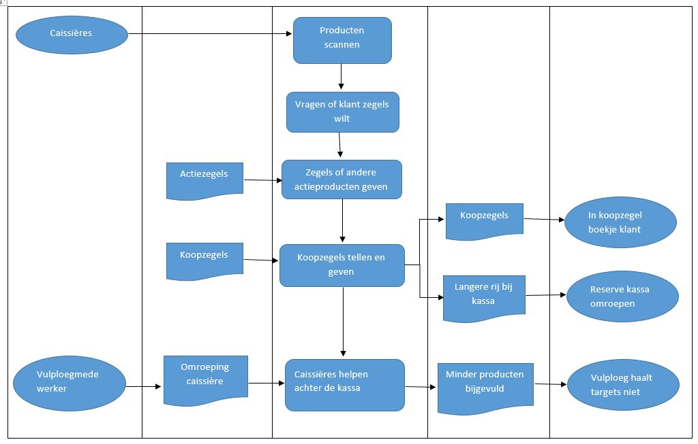
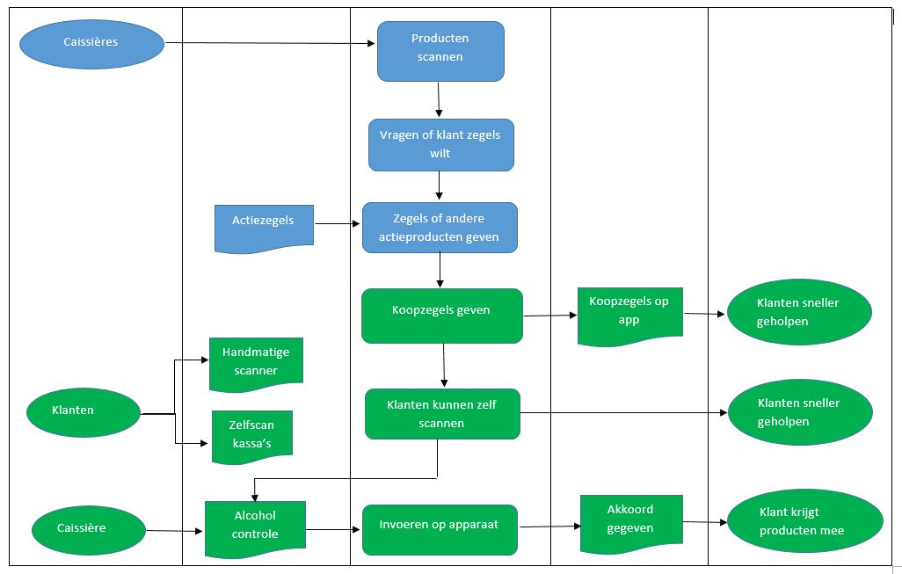

Ontwerpen bedrijfsprocessen
Een bedrijfsproces is een verzameling van samenhangende activiteiten die gericht zijn op een klant en deze zijn afgestemd op organisatiedoelen. De processen bestaan uit een aantal stappen die op elkaar aansluiten. Er zijn drie soorten processen, namelijk:
- Primaire processen: zijn nodig voor de productie van het product
- Sturende processen:alle activiteiten die nodig zijn om het productieproces te kunnen managen.
- Ondersteunende processen:alle activiteiten die nodig zijn om het primaire proces uit te kunnen voeren. (Infoland, z.d.)
Hieronder vindt u een voorbeeld van een bedrijfsproces bij de Albert Heijn. Ik heb voor deze organisatie gekozen omdat ik hier een paar jaar terug gewerkt heb, en omdat er tegenwoordig bij supermarkten ook vormen van technologie worden toegepast. Hieronder vindt u allereerst het proces aan de hand van Sqeme, waarbij nog geen technologische ontwikkelingen hebben plaatsgevonden.

Qua technologische ontwikkeling kan er bij de Albert Heijn tegenwoordig online besteld worden en is er de bonuskaart. Echter heb ik voor een andere ontwikkeling gekozen, namelijk die van het invoeren van de zelfscankassa’s en het handmatige scannen bij het door de winkel lopen. Ondanks dat dit wellicht in veel winkels al een begrip is, is het pas korte tijd ingevoerd bij deze winkel. Ook wil ik graag de veranderingen weergeven, zodat ook de kleinere winkels of drogisterijen dit kunnen gaan gebruiken. Tevens heb ik hier de nieuwste ontwikkeling bij verwerkt, namelijk het online koopzegelsysteem wat men wil invoeren. Hierbij kan men via een app bijhouden hoeveel koopzegels men heeft en hoeven deze zegels niet meer uitgeteld en geplakt te worden. Het proces na technologische ontwikkeling ziet er als volgt uit.

De gevolgen van het invoeren van de zelfscankassa’s, is dat caissières minder klanten per kassa hebben. Tevens zal de vulploeg minder vaak bij hoeven springen, waardoor het vullen van de producten door kan gaan en de targets op tijd gehaald worden. Ook zullen er minder caissières nodig zijn op een dag. Er hoeft er meestal maar één te staan bij de zelfscankassa’s als controle, en door de zelfscans zijn er minder reguliere kassa’s nodig. Men is tegenwoordig erg gehaast en op deze manier kan men snel zelf hun producten scannen en in hun eigen tempo. Verder zal door de overgang van papieren koopzegels naar online koopzegels tijd bespaart worden met het tellen van deze zegels en deze uit te geven. Toen ik daar nog werkte was dit soms best een gedoe, waardoor dat soms best wat tijd kon kosten.
Naar aanleiding van de technologische ontwikkelingen is het TOM-model ook veranderd. Hieronder vindt u het TOM model, na het invoeren van de nodige technologische ontwikkelingen. De veranderingen in het model zijn voornamelijk de groene blokken uit het proces hierboven.

Ga terug naar 'Smart Business' Ga terug naar vorige pagina Ga naar volgende pagina